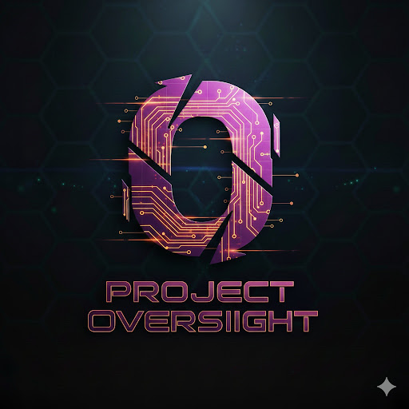
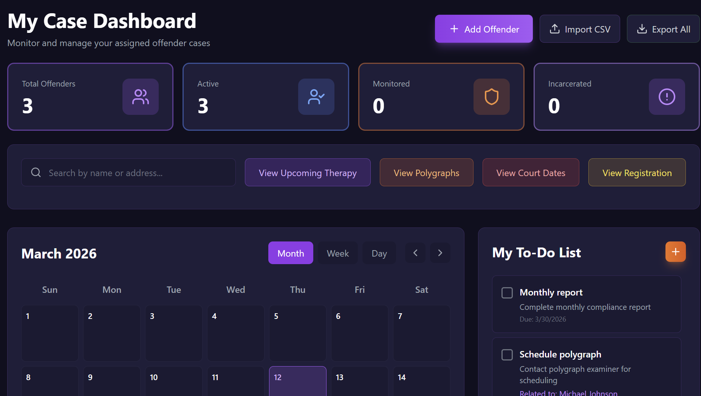
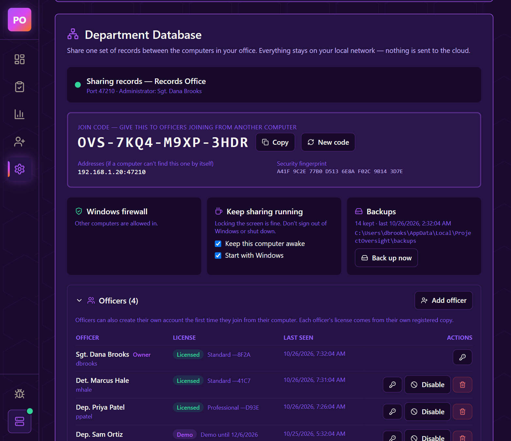
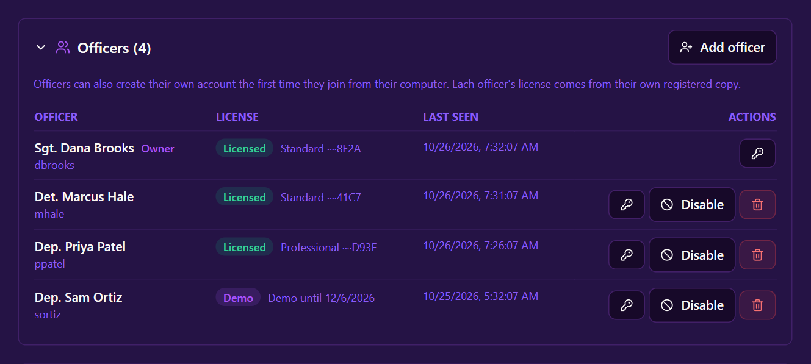
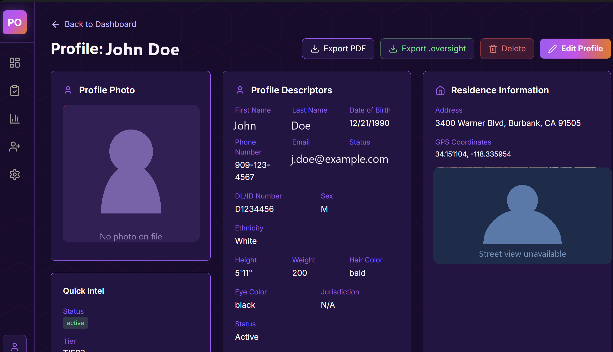
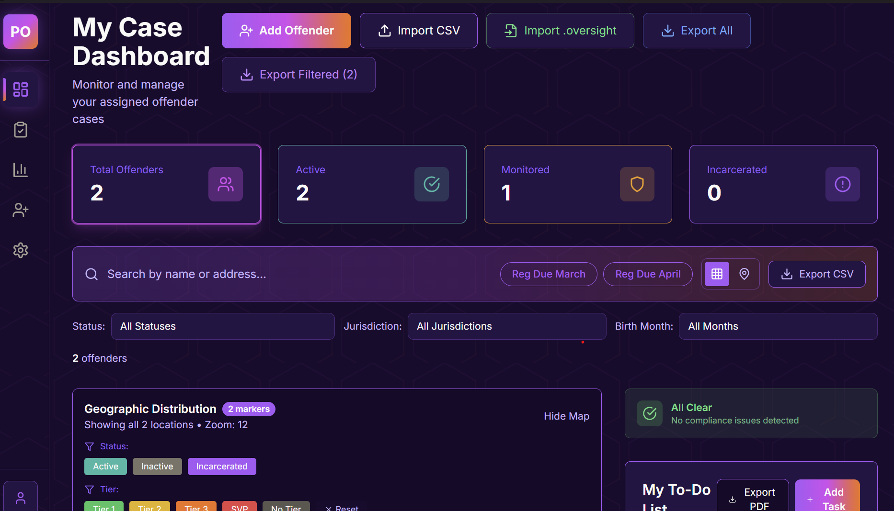
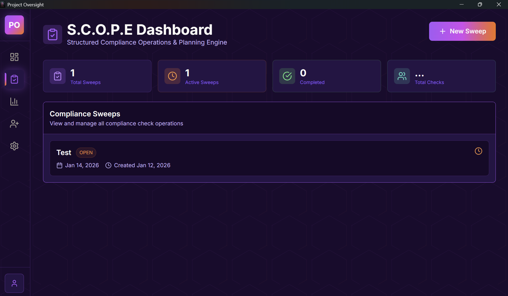
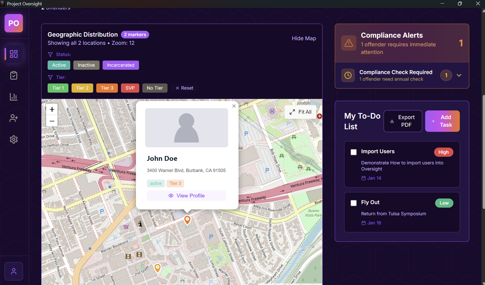
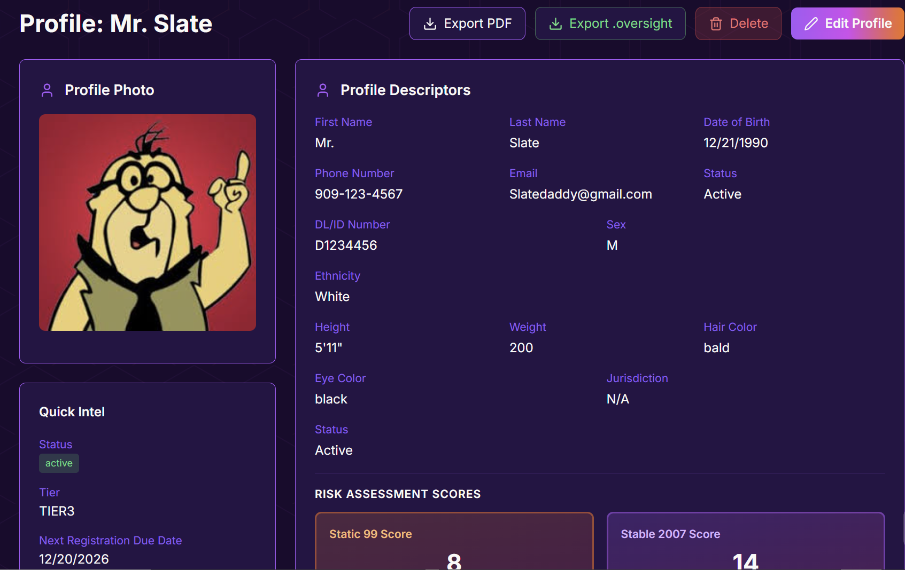
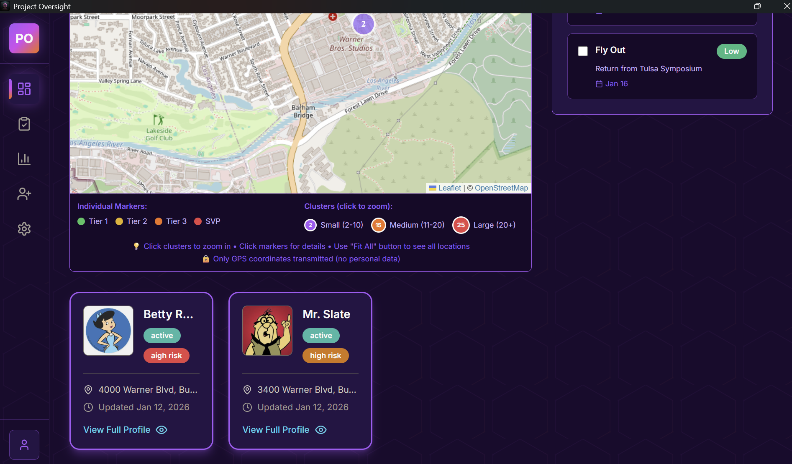

Runs locally
No cloud storage. No external hosting. You truly own your data — it never leaves your computers or your building.

Intellect LE Platform · Offender Management
New in 1.7 Department Database — share records across your officeBuilt for agencies with limited funding. Designed for officers who deserve better tools.
Runs locally · Shares across your office · No annual fees · USB-deployable

After years of teaching sex offender supervision at the SOMS Symposium, we kept hearing the same thing from agencies across the country: no funding, spreadsheets, and hard-copy files.
It was an unacceptable reality — officers working to protect their communities, forced to "make do" with tools that made their jobs harder and their documentation weaker.
So we built a tool with no annual fees, no cloud costs, and no barriers to adoption — something any agency could run, regardless of budget or IT restrictions.
No cloud storage. No external hosting. You truly own your data — it never leaves your computers or your building.
Share one set of records across every computer in your office, over your own network. Still no cloud, still no fees.
No maintenance charges. No hidden costs. Free to adopt and free to keep using.
Designed to bypass restrictive IT environments. Plug in, run, and work — no installation required.
No more emailing spreadsheets around or wondering whose copy is the real one. One office computer hosts the records; every other computer joins it with a code. Everyone works from the same offenders, tasks and notes — and it all stays inside your building.
When one officer saves a change, it shows up on everyone else's screen moments later. No refresh button, no "did you get my update?"

Each officer has their own username and password, so you always know who's working in the records.

Any office computer that's on during the workday. Turn on sharing in Settings.
Enter the join code on each computer. The host is found automatically.
Each officer creates their own account and gets straight to work.
Lock the screen and go home — sharing keeps running, and the host reopens by itself after a restart.
Every click, with screenshots. Most offices are up and running in about ten minutes.
Everything stays on your machines — nothing to breach, nothing to subscribe to.

Bring your existing records in without re-keying everything by hand.

Structured Compliance Operations & Planning Engine puts field checks in officers' hands with nothing to install.

See where offenders are and make faster, better tactical decisions.

Export a complete offender profile straight into Project V.I.P.E.R. the moment a new crime or lead emerges.

Track temporary offenders entering your jurisdiction and never lose the thread on their departure.

No installation required.
Runs directly from the drive.
Bring existing records in fast.
Optional: host on one computer, join from the rest.
Handle offenders, run checks, generate reports.
Hand off complete profiles when needed.
From our small, dedicated server.
Sex offender management teams that need defensible records.
Officers conducting field compliance checks.
Teams that need everyone on the same records.
Departments working with limited budgets.
Teams stuck on spreadsheets or paper files.
Anyone who needs fast, defensible documentation.
Cut the time each check takes.
Less paperwork, more supervision.
Improved quality that holds up.
Everyone works from the same records, updated live.
No dependency on IT departments.
No ongoing financial impact.
Download the installer and start a full-featured trial — no license key required. Install it on a workstation or run it from a USB drive in restricted IT environments. Version 1.7 adds the Department Database for sharing records across your office.
Oversight is currently provided at no cost to attendees of the Sex Offender Management Symposium. Attend, and take it home for your agency.
Learn more at somsymposium.com